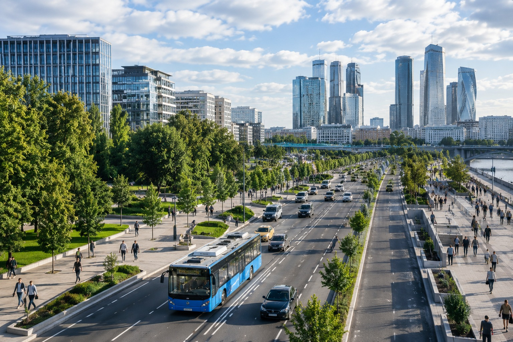
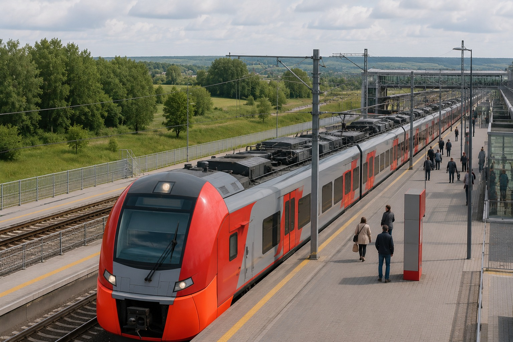
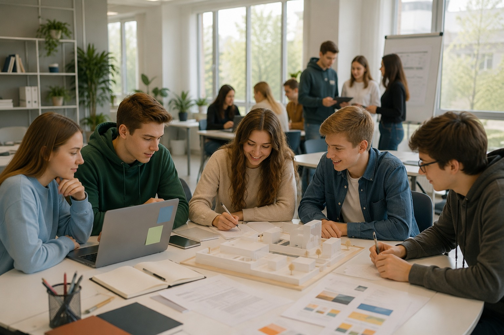
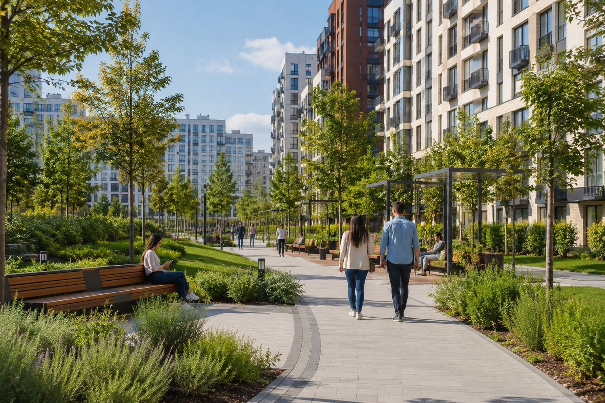
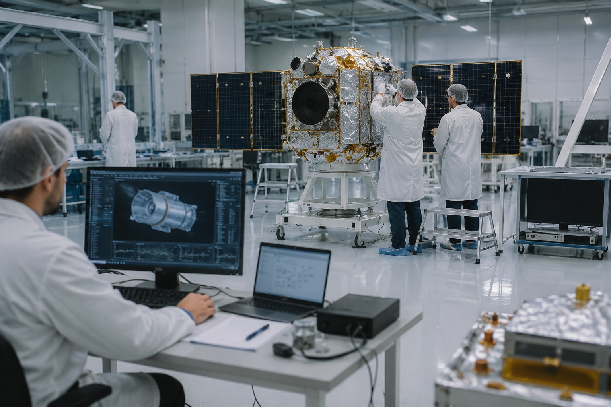

национальных целей
Понятный гид
Национальные проекты простым языком
Разберитесь, какие проекты действуют в стране, как они связаны с жизнью людей, регионами, бюджетом и официальными источниками.
цели
проекты
бюджет
результаты
понять
посмотреть
проверить

стартовали в 2025; в 2026 добавлена биоэкономика
информированности
федеральных средств
внебюджетных средств
Что можно сделать на сайте
Найдите нужный путь за один клик
Выберите задачу: найти проект по ситуации, проверить цифру, открыть карту или разобраться в системе.
Найти проект по жизненной ситуацииСемья, образование, здоровье, профессия, городская среда.
Посмотреть проекты по направлениямЧеловек, регионы, экономика, технологии.
Проверить цифры73%, 40+ трлн, 13+ трлн и другие показатели с источниками.
Понять системуЧем цель отличается от проекта, федерального проекта, меры и результата.

Посмотреть регионы и экономикуТранспорт, промышленность, экология, туризм и технологии.Нацпроекты в жизни
Что меняется вокруг человека
Проекты проще понять через знакомые ситуации: семья, учеба, городская среда, работа, технологии и сервисы.
семья и здоровье
Поддержка семьи, профилактика и активная жизнь

образование и профессия
От школы и колледжа к навыкам и работе

город и транспорт
Дороги, дворы, маршруты и связность регионов

технологии и экономика
Данные, производство, экспорт и новые отрасли
Проверяемые данные
Цифры должны вести к источнику
Официальные документыцели и нормативная база
Портал нацпроектовназвания, направления, новости
ВЦИОМ и бюджетинформированность и масштаб ресурсов
Научная базаконтекст управления, регионов и коммуникации
Быстрый маршрут
Что хотите понять?
Зачем этот сайт
Официальной информации много, но ее нужно связать
Здесь можно быстро пройти путь от цели к проекту, бюджету, региональному примеру и источнику проверки.
Без сложных терминов и длинных документов на первом шаге.
Проекты сгруппированы по смыслу, а не по участникам работы.
Ключевые показатели привязаны к типу источника.
Семья, город, работа, здоровье, транспорт и данные показаны вместе.